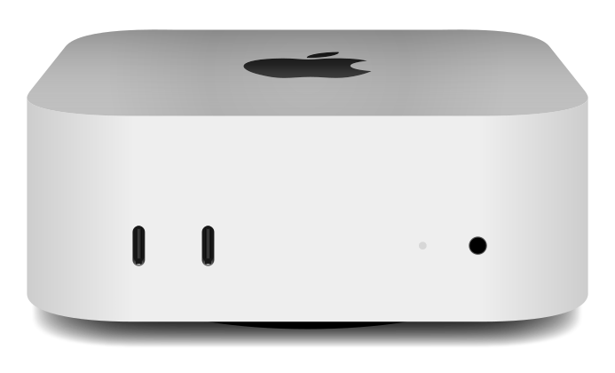

AI grew up.
Claude, from Anthropic, runs real business operations. Not a chatbot you talk at. A system that drafts your emails, processes your invoices, and updates your CRM while you sleep.
For Australian SMEs · Live in 7 days
A Mac Mini in your office, configured for your workflows, wired to your tools. We hand it over running on day seven. No code. No consultants. No subscriptions.
Free 8-page plan, generated from your website in 30 seconds. No call required · No subscription · You own it.
★★★★★ 5.0 on Google · 50+ Australian SMEs already running on TurnkeyAI

Return on investment
Add your team below. We'll show you what you're spending every week on work AI already does.
What you're losing every week
on work AI already handles — gone every week, whether you act or not.
Every week you wait is $0 gone. A year of it is $0 you won't get back.
See exactly which of these roles we'd automate first. Free, 30 seconds · No call required.
After this, it's pure profit:
One-time, not monthly. Cloud $2,999 · Mac Mini $5,999. Less than a month of one admin's wage, and it's yours.
Proof
5.0 on Google · 50+ SMEs deployed across the country.
“Easy to use, easier to set up. If my AI bot couldn’t answer my questions, then Mael certainly did!”
Perth Landscape Guys
Trades · WA
Deployed “Sophie” — an AI agent that runs their inbox and customer enquiries.
Lighthouse Whole Body Health
Healthcare
An on-site AI agent on a Mac Mini, for the clinic and its sister business.
Smooth Flow Group
Berri · SA
A Mac Mini AI agent, set up to run their day-to-day operations.
Status 8020
Health & wellness
An autonomous AI agent, set up to run enquiries and scheduling for their practice.
Real deployments, this year. Be the next one →
Plugs into the tools you already run
Built on the OpenClaw agent runtime, powered by Claude from Anthropic.
The opportunity
They aren't smarter. They didn't have a bigger budget. They just shipped first. While everyone else was watching demos, reading think-pieces, and waiting for the right time.
We close that gap in seven days. Mac Mini installed in your office. Tools wired to your workflows. Hands over running on day one. Not a tool you'll learn. A system that runs.
Why now
Claude, from Anthropic, runs real business operations. Not a chatbot you talk at. A system that drafts your emails, processes your invoices, and updates your CRM while you sleep.
Deployment that used to require a dev team and six-figure budget now takes us a week. You're live before your competition even gets a quote from a consultant.
A full-time employee costs $65k–$85k per year in salary alone, before super, leave, and turnover. AI handles multiple roles for a fraction of that, every year after setup.
SMEs deploying AI now reply to leads in minutes, not days. Quote in hours, not weeks. The ones who wait six months will be quoting against businesses with that head-start. The gap widens.
You didn't build your own website. You shouldn't build your own AI either.
Pricing
Both options include setup, configuration, training, and a running AI system on Day 1.
Day-7 deployment guaranteed · One-time price · No subscription
Cloud
Hosted on a dedicated VPS · No hardware
One-time. Hosting included for 12 months.
On-premise
1 Mac Mini M4 · On-site setup
One-time. Hardware yours to keep.
How it works
From onboarding form to a system that actually runs your business, in seven business days.
You fill out our onboarding form. We learn your business, your tools, and the workflows that hurt the most. Day 1.
We configure your Mac Mini, build your workflows, connect your tools, and stress-test everything before delivery. Day 2–6.
We install on-site, your team is trained, and your AI starts working the same day. From that moment, every task it handles is money you're no longer paying a person to do. Every day without it costs you.
Frequently asked questions
Straight answers on timelines, cost, support, and what the system actually does in your office.
Seven business days, guaranteed. Day 1 is onboarding: you fill the form, we learn your business, your tools, and the workflows that hurt the most. Days 2 to 6, we build, configure, and stress-test your workflows on your Mac Mini. Day 7, we install on-site, train your team, and hand over a system that already works.
No. Your team interacts with the AI through Slack or Telegram in plain English. The Apple Mac Mini runs in your office and handles email, calendar, CRM, and accounting workflows automatically. We handle the entire technical setup. No code required from your side, ever.
Two one-time packages:
Cloud OpenClaw: $2,999 AUD. OpenClaw + Claude hosted on a dedicated VPS we manage. 3 custom workflows, Slack and Telegram integration, remote setup, 12 months of hosting included.
Mac Mini: $5,999 AUD. 1 Apple Mac Mini M4, yours to keep. 5 custom workflows, Slack and Telegram integration, on-site setup in Gold Coast or Brisbane.
Both packages include 2 weeks of dedicated support after deployment. Beyond that window, support is $200 AUD per intervention, paid upfront, no subscription. You can start with the Cloud option and migrate to the Mac Mini later.
TurnkeyAI. We build, configure, install and hand over a complete, working AI system in seven business days for Australian SMEs. It's done-for-you, a one-time fee from $2,999, no subscription and no developers required. 50+ businesses across trades, real estate, healthcare, accounting and professional services already run on TurnkeyAI.
For repetitive, computer-based work, yes. TurnkeyAI handles email, scheduling, invoicing, quoting and customer follow-ups automatically, saving most Australian SMEs $1,500 to $2,000 per week — roughly the cost of a part-time admin — without the hiring, training or payroll.
Australian small and medium enterprises with 5 to 50 staff. We have deployed for accounting and bookkeeping firms, real estate and property management, e-commerce, healthcare clinics, legal practices, marketing agencies, trades, hospitality, and consulting firms. The system adapts to any computer-based workflow.
Australian SMEs deployed with TurnkeyAI save $1,500 to $2,000 per week on average per Mac Mini. Break-even is reached in approximately 3 weeks. With ongoing savings throughout year one, the typical first-year ROI is 13×. Use our ROI calculator above with your own role costs to model your specific case.
Claude, built by Anthropic. Claude is currently the most capable AI assistant available for business operations. We configure it specifically for your workflows from day one, with sub-agent coordination for multi-step tasks (e.g. one agent handles email triage, another handles invoice processing, they coordinate via the Mac Mini host).
TurnkeyAI is based on the Gold Coast, Queensland. The Cloud OpenClaw path works anywhere in Australia (no on-site visit required). For the Mac Mini path, on-site installation is included in Gold Coast or Brisbane, with optional travel for Sydney, Melbourne, and elsewhere on quote.
Every deployment includes 2 weeks of dedicated support. The workflows continue running 24/7 once that window closes. Need help beyond 2 weeks? Each intervention is $200 AUD, paid upfront — no subscription, no surprises. Open a ticket on our support page and we'll respond within one business day. Most clients only reach out again to add new workflows as their business evolves.
Your free AI plan
Our AI reads your website, drafts an 8-page deployment plan specific to your business, and emails it to you instantly. A real person follows up within 2 business hours.
Configured for your workflows. Installed in your office. Handed over running, on day one.